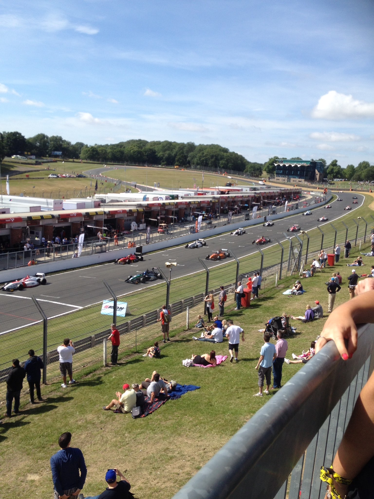
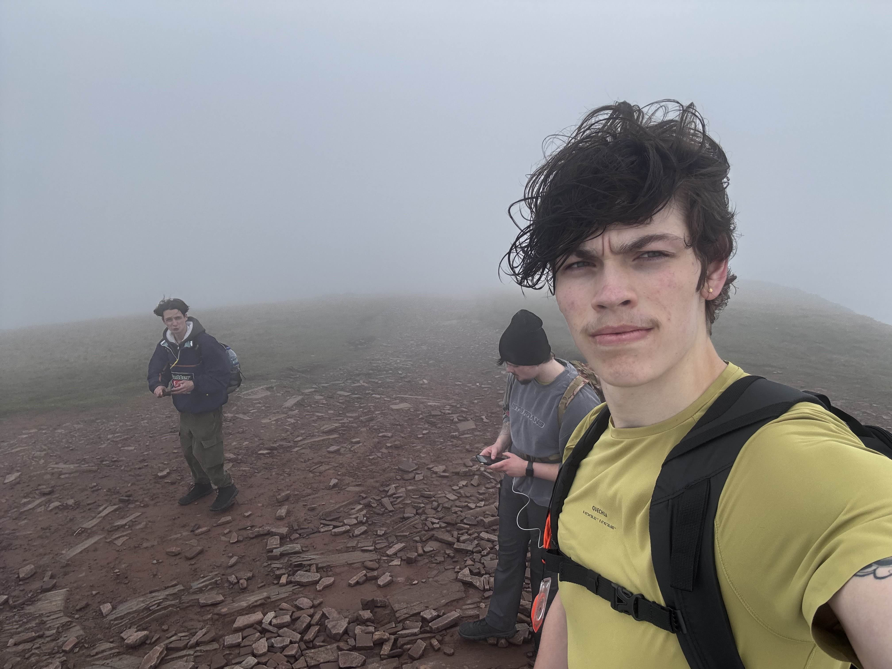

About Me

I'm a Visual Effects graduate who studied at Escape Studios. I specialise in 2D compositing using
industry level software, such as nuke and silhouette in a range of projects both as a part of my
studies and freelance. I have experience in a wide range of tasks and tools including compositing
CG assets, Plate clean up, Rotoscoping and more.
Alongside my VFX studies I try to take part in a wide range of hobbies to develop skills I find
interesting or enjoy doing. Some of these include Computer science and programming, athletics and motorsports,
as well as art. I want to always be ready to continue learning and developing my skillset with any opportunity I can find.
 